| SOURCE | TITLE| IMAGE MATCH | click to source page |
| Dreamstime.com | 104 King Fuad Stock Photos - Free & Royalty-Free Stock Photos from Dreamstime | 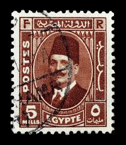 |
| eBay | Egypt 15c mills Stamp - 1950s King Farouk (Used Hinged) X23 | eBay | 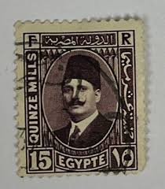 |
| eBay UK | Egypt 1936-1937 SG#234, 2m Black King Fuad Used #F2838 | eBay UK | 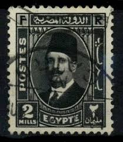 |
| Shutterstock | Egypt Circa 1936 Stamp Printed By Stock Photo 107099486 | Shutterstock | 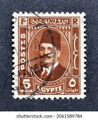 |
| eBay | EGYPT 134 - King Fuad "1934 Deep Green" (pb72227) | eBay | 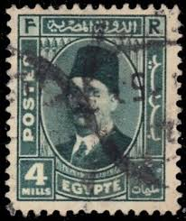 |
| eBay | Egypt old Perfin stamp | eBay | 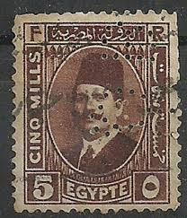 |
| Dreamstime.com | Stamp Egypt 15 Stock Photos - Free & Royalty-Free Stock Photos from Dreamstime | 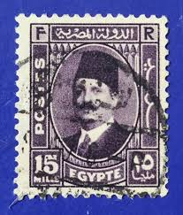 |
| Shutterstock | Ankara Türkiye- 10222025 Postage Stamp Printed Stock Photo 2697949261 | Shutterstock | 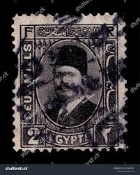 |
| Dreamstime.com | EGYPT - CIRCA 1936: a Stamp Printed in Egypt Shows a Portrait of Sultan and King Fuad I, Circa 1936. Editorial Stock Image - Image of letter, king: 185860984 | 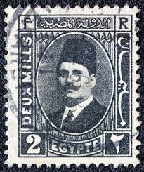 |
| Blogger.com | Mavi Boncuk: Crédit Lyonnais in Ottoman Empire | 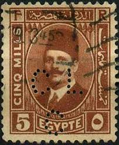 |
| Stamp Community Forum | Interesting Egypt Stamps And Cancellation - Stamp Community Forum | 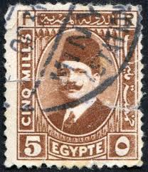 |
| ebid.net | Egypt stamps 1927 - SG 149 - King Fuad 2 mills - used on eBid United States | 160290273 | 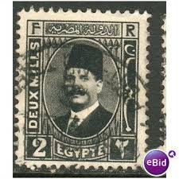 |
| Wikimedia.org | File:King Fuad I (1868-1936) 5M.jpg - Wikimedia Commons | 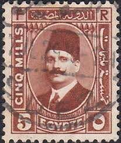 |
| eBay UK | Good (G) Used Egyptian Stamps for sale | eBay UK | 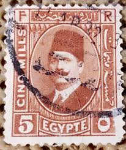 |
| HipStamp | Egypt on France Stamp Used A20P57F3247- | Middle East - Egypt, Stamp / HipStamp | 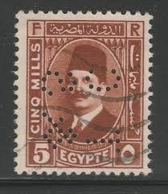 |
| eBay UK | Egypt 1936-1937 SG#236, 5m Deep Brown King Fuad Used #F2858 | eBay UK | 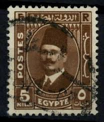 |
| Wikimedia.org | File:King Fuad I (1868-1936) 5M 2.jpg - Wikimedia Commons | 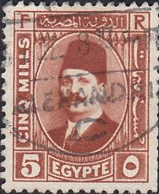 |
| eBay UK | Egypt 1936-1937 SG#233, 1m Orange King Fuad Used #F2831 | eBay UK | 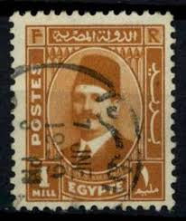 |
| eBay | Egypt, Scott 140, King Fuad, 1934, used | eBay | 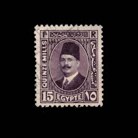 |
| eBay | Egypt on France Stamp Used A20P57F3241 | eBay | 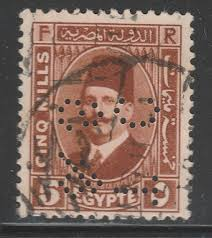 |
| eBay | STAMPS-EGYPT. 1927. 5m Chestnut. Variety Watermark Inverted. SG: 156 var. FU. | eBay | 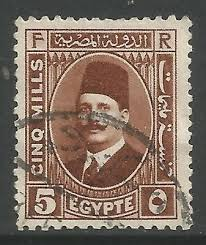 |
| eBay UK | Egypt 1927-1937 SG#152, 3m Deep Brown King Fuad Used #F2790 | eBay UK | 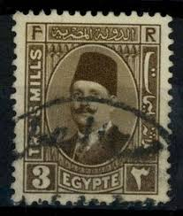 |
| eBay UK | Egypt 1927-37 SG#156, 5m Chestnut King Fuad I Used #E93179 | eBay UK | 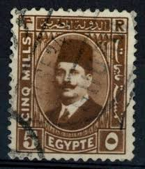 |
| eBay | Egypt 1927 - 1933 King Farouk 5M (GBX) | eBay | 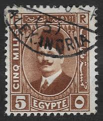 |
| commonwealthstamps.com | Egypt 1953 King Farouk with portrait obliterated SG 446 Fine Mint | 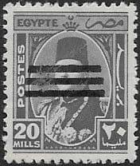 |
| commonwealthstamps.com | Egypt 1953 King Farouk with portrait obliterated SG 444 Fine Used | 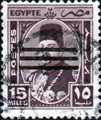 |
| eBay Australia | Egypt 419 fine used / cancelled 1953 King Faruk | eBay Australia | 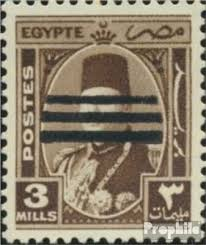 |
| eBay | 1927 EGYPT S#141 KING FUAD🔥used VF | eBay | 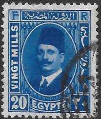 |
| Dreamstime.com | Letter Africa Starting I Stock Photos - Free & Royalty-Free Stock Photos from Dreamstime | 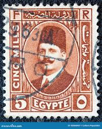 |
| eBay | Original Gum Palestinian Stamps 1948-Now for sale | eBay | 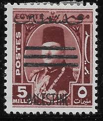 |
| HipStamp | Egypt #246 King Farouk Used | Middle East - Egypt, General Issue Stamp / HipStamp | 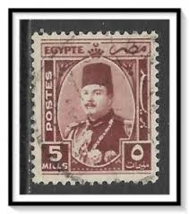 |
| eBay | Egypt Old Stamp Used in Gaza Palestine Overprint | eBay | 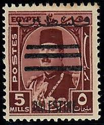 |
| eBay | Egypt, Scott 130, King Fuad, 1927-1937, used | eBay | 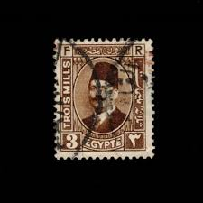 |
| eBay | Lot of 7) 1923 Egypt 1M to 15 Mills Used Hinged Stamps | eBay | 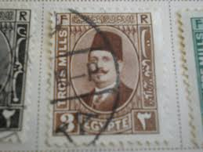 |
| eBay | egypt stamp-king Fouad Collection 10 Mille Misperf Mint Never Hinged | eBay | 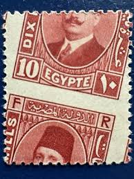 |
| eBay UK | Egypt 1936-7 SG#233, 1m Orange King Fuad I Used #E93200 | eBay UK | 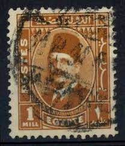 |
| Shutterstock | Brunei Darussalam Circa 1988 Stamp Printed Stock Photo 76106131 | Shutterstock | 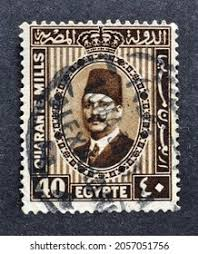 |
| eBay | EGYPT 1953 KING FAROUK OVERPRINT 5M COLOUR TRIAL | eBay | 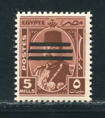 |
| eBay | Egypt 1953 15m overprint double error MNH | eBay | 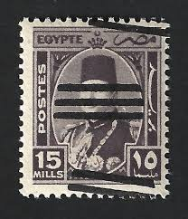 |
| eBay | Egypt SC#346🔥1953🔥REPUBLIC OVPRT 3 BARS🔥used VF | eBay | 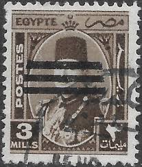 |
| eBay UK | Cino Mills Egypte Egyptian Postage Stamp | eBay UK | 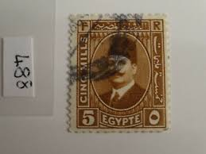 |
| eBay UK | Egypt 1936-1937 SG#233, 1m Orange King Fuad Used #F2830 | eBay UK | 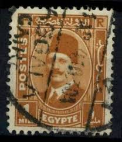 |
| Dreamstime.com | Postage Stamp Printed in Egypt Shows King Fuad I, Serie, 15 Egyptian Millieme, Circa 1927 Editorial Photography - Image of coronets, fuad: 171643757 | 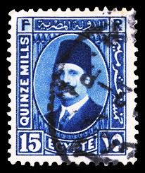 |
| ebid.net | Egypt stamps 1927 - SG 156 - King Fuad 5 mills - used 6 on eBid United States | 203758397 | 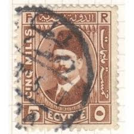 |
| eBay | Egypt Old Stamp Used in Gaza Palestine Overprint | eBay | 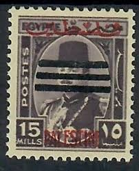 |
| Gumnut Antiques | Africa - Stamps – Gumnut Antiques | 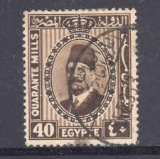 |
| ebid.net | Egypt stamps 1927 - SG 156 - King Fuad 5 mills - used 5 on eBid United Kingdom | 198420762 | 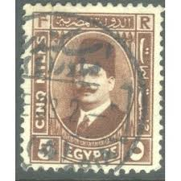 |
| Mystic Stamp Company | 149 - 1937 Egypt - Mystic Stamp Company | 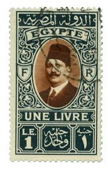 |
| ebid.net | Egypt stamps 1927 - SG 156 - King Fuad 5 mills - used on eBid United Kingdom | 160290274 | 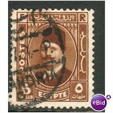 |
| eBay | Egypt - 1934 - SC 179 - Used | eBay | 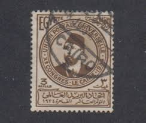 |
| eBay | Egypt SC#139🔥1927-37🔥KING FUAD🔥USED VF | eBay | |
| eBay | MOMEN: EGYPT #146 1927 100mil PAIR MISPERF FOUAD MINT OG NH LOT #67109* | eBay | |
| Issuu | Philangles 428 Catalogue by Philangles Ltd - Issuu | |
| Stamp value?? : r/stamps | ||
| Stamp Auction Network | catalog Level 3 | |
| eBay | Rare Stamps | eBay | |
| Stamp Auction Network | Robert A. Siegel Auction Galleries, Inc. Sale - 1204 Page 103 | |
| Shutterstock | 3+ Thousand Egyption Old Stamp Royalty-Free Images, Stock Photos & Pictures | Shutterstock | |
| 130 Egyptian Postage Stamp ideas | egypt stamps, egypt stamps collection, egyptian stamp collection | ||
| Egypt 1927-39. King Fuad I and his son King Farouk high value definitives including the One £ issue. Continuing my series of £ stamps. |
_5M.jpg){kind=link}
_5M_2.jpg){kind=link}